Exterior.
Son muchos los arquitectos, interioristas, así como particulares, que buscan integrar el espacio interior con el exterior con una estética capaz de armonizar todos los elementos de cada una de las partes.
Con este objetivo, a través de elementos naturales, eminentemente pavimentos porcelánicos para exteriores, se busca cubrir las superficies exteriores con acabados antideslizantes de buena calidad y diseño actualizado.
Pudiéndose aplicar como suelos técnicos o elevados en terrazas de uso público y privado, también permiten su aplicación directamente en el suelo. Estos pavimentos de exterior suelen usarse en espacios urbanos como zonas residenciales, parques, jardines, restaurantes, centros comerciales…
Ven a conocer las propuestas de pavimentos exteriores visitando la tienda-showroom de Barcelona. Únete a las redes sociales en las que estamos, y a la newsletter para estar al día de tendencias.
Marcas en el showroom
- Plus Cover
- Vitacer
- Cottodeste
Y si lo que buscas no está en exposición, lo buscamos en la Bagnoteca.
Novedades 202611

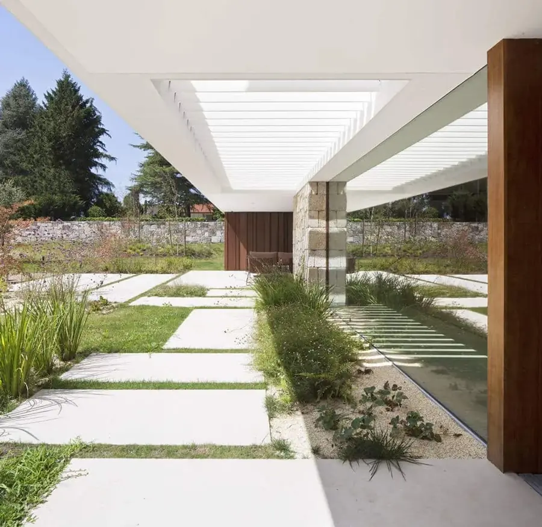
Exterior¿Por qué los pavimentos exteriores casi siempre acaban marcados por el uso diario?
Tránsito constante, cambios de clima, exposición al sol. La mayoría de las superficies lo acusan tarde o temprano.
Dekton aguanta donde otros ceden: alta resistencia a arañazos, manchas e impactos, sin deteriorarse por los rayos UV ni las fluctuaciones de temperatura.
Gran formato para continuidad estética y tecnología antideslizante Grip+ en las zonas más críticas.

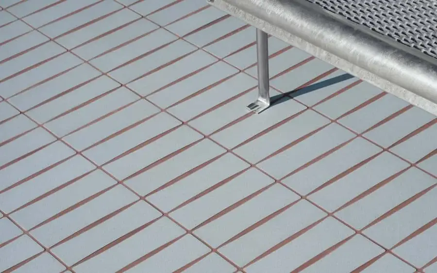
ExteriorPavimentos exteriores Osso & Bottone - Mutina
Mutina presenta su nueva colección de pavimentos exclusivos para zonas exteriores “Osso & Bottone”, el equilibrio perfecto entre funcionalidad y arte.
La propuesta del diseñador Ronan Bouroullec debe su nombre a las formas contorneadas y ligeramente suavizadas que tienen sus piezas cerámicas.
La idea principal era romper con esas formas rectas y segmentadas a las que estamos acostumbrados y conseguir un diseño orgánico, en fusión con el entorno natural, que permitiera jugar con la composición también en espacios interiores.
 Exterior
ExteriorMosaicos personalizados para fachadas y exteriores - TREND
Trend te invita a sacar tu lado más creativo con la nueva gama de mosaicos semitransparentes para fachadas y exteriores.
Diseños exclusivos que permiten ser combinados entre ellos, creando siempre resultados diferentes. Las nuevas líneas Vitreo y Feel están disponibles en un amplio abanico de colores, haciendo que cada proyecto sea una auténtica obra de arte.
La colección encaja en cualquier superficie (interior o exterior), de cualquier formato (vertical u horizontal) y utilidad (piscinas, fachadas, duchas, etc.)
Su diseño, en dimensiones de 2x2cm y con juntas de 1mm, permite que el material sea antideslizante aportando la máxima estabilidad y seguridad a la superficie.
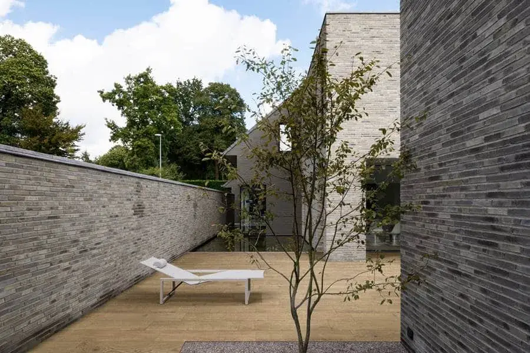
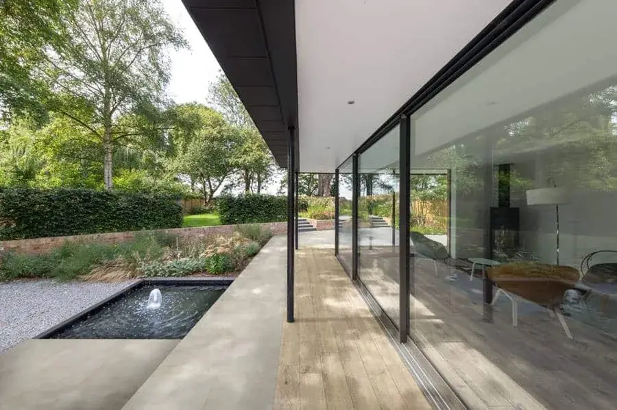
ExteriorPavimentos exterior porcelánicos de madera Ossimori - Ragno
Gres porcelánico que emula la madera, con una estética de la antigua tradición artesanal. Ossimori de Ragno se ofrece en cuatro colores naturales y en distintos formatos muy fáciles de instalar.
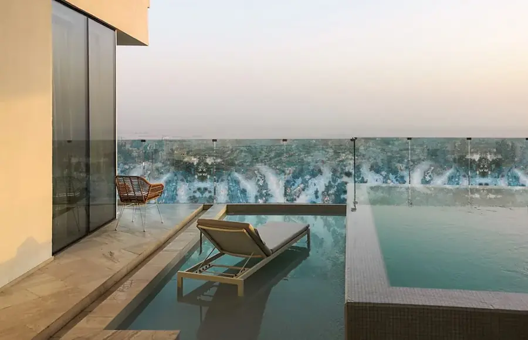
ExteriorBarandilla Vetriete para exterior - Sicis
Barandillas y balcones hechos con Vetriete, un material de gran versatilidad, que puede ser usado en proyectos de interior y exterior, indistintamente.
Una elección muy adecuada tanto para paredes como para suelos.
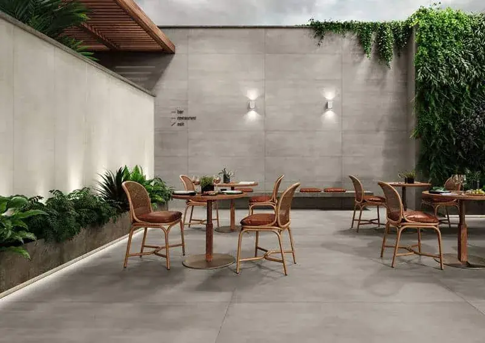
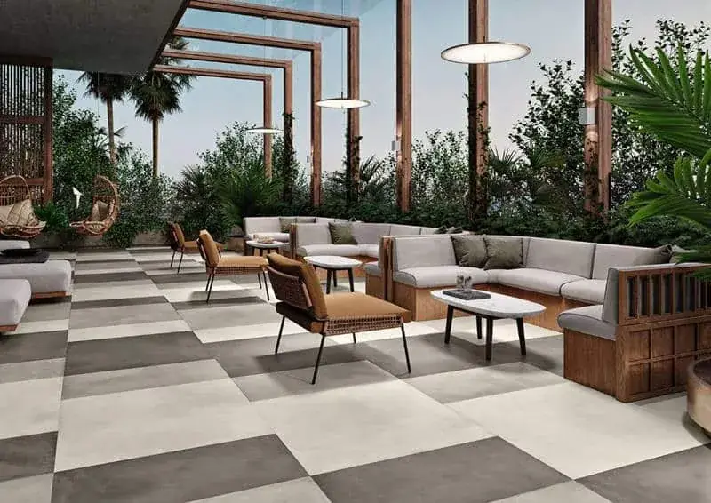
ExteriorAcabado soft grip Sabi para suelos y tarmias exteriores- Revigres
Soft Grip y Sabi son dos innovadores acabados de superficie, muy suaves con propiedades antideslizantes de alta eficacia y calidad.
Además, poseen una alta resistencia, cosa que garantiza una alta durabilidad y resistencia a las manchas.
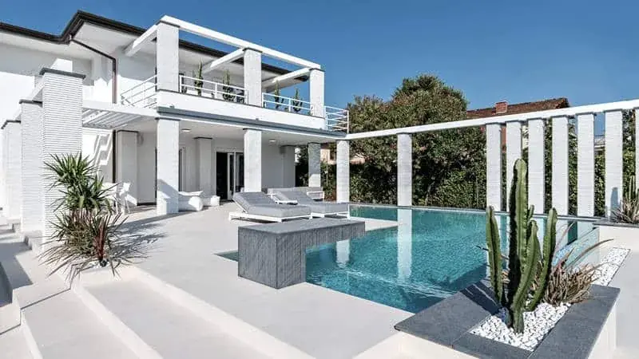
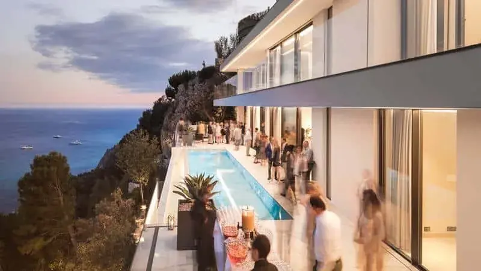
ExteriorPavimentos para exteriores - Laminam
Los revestimientos exteriores de Laminam consiguen convertir cualquier terraza, patio o jardín en un espacio singular en el que disfrutar del buen tiempo y de los momentos de ocio y/o intimidad.
Una solución funcional y resistente solo apta para los clientes más exigentes.
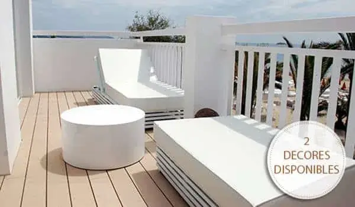
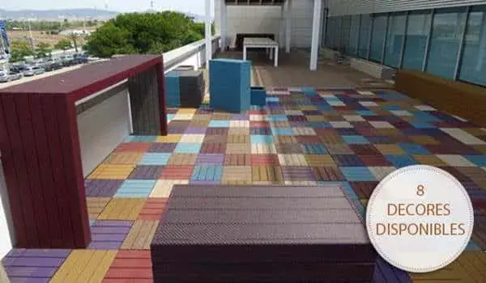
ExteriorTarimas y suelos exteriores Eureka - Floover Flooring
Con la llegada de la primavera y el verano, se inicia una época en la que los exteriores cobran de nuevo importancia pues es ahí donde pasaremos grandes momentos.
Con esta idea la firma Eureka nos presenta una serie de tarimas de exterior, gracias a las que podrás habilitar estas zonas con estilo y diseño moderno.
Eureka te propone:
Decking Encapsulado de 2.200 x 142 x 22mm: una tarima en 6 colores naturales, textura madera y de alta resistencia a las rayadas y manchas. Todo ello con la necesidad de nulo mantenimiento y posibilidad de revertir cada pieza.
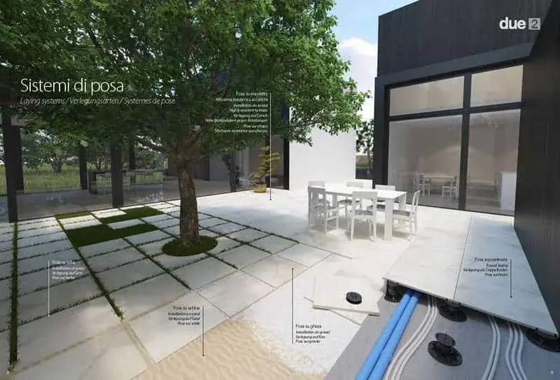
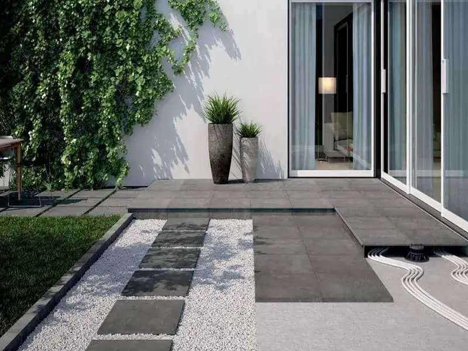
ExteriorPavimentos exteriores elevados - Del Conca
La prestigiosa marca italiana Del Conca, es una de las fábricas que en la actualidad te propone una de las mayores ofertas en cuando a modelos y formatos – por lo general el formato standard es el de 60×60 y este fabricante dispone de 40×80 / 60×60 / 80×80 / 40×40 / 20×20 / 40×120 / 30×120 / 60×120 .
De entre todas sus colecciones destacamos el sistema Due2, por ser ésta una opción fácil y sencilla de aplicar, que merece la pena tener presente si lo que buscas son pavimentos elevados de calidad para exterior.
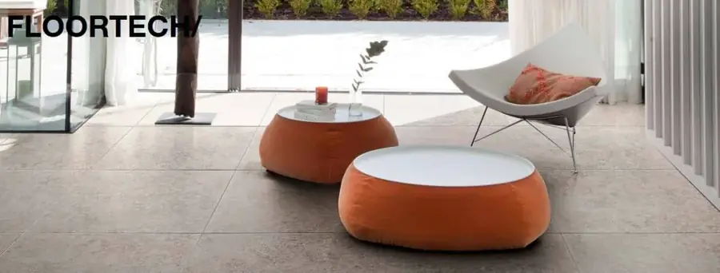
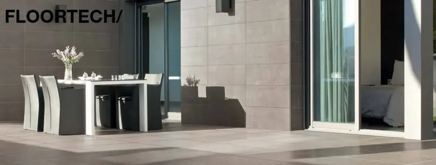
ExteriorPavimentos exteriores que dan continuidad a los diferentes espacios
La importancia que muchas marcas de pavimentos y revestimientos le están dando a disponer de una oferta de acabados de interior y exterior que den continuidad a los diferentes espacios, es una tendencia que poco a poco se van consolidando.
Dentro de esta tendencia, destacamos la diversidad de suelos para exteriores (60×120 / 80xx80 / 60×60 y 30×60) de la serie Floortech de Floorgres. Geralmente los formatos habituales son el 30×60 y 60×60, mientras que esta colección también la tienes disponible en formato 60×120 y 80×80.
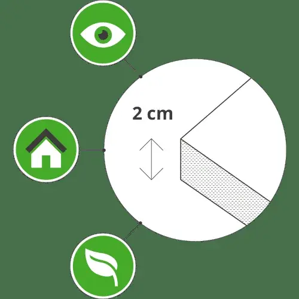
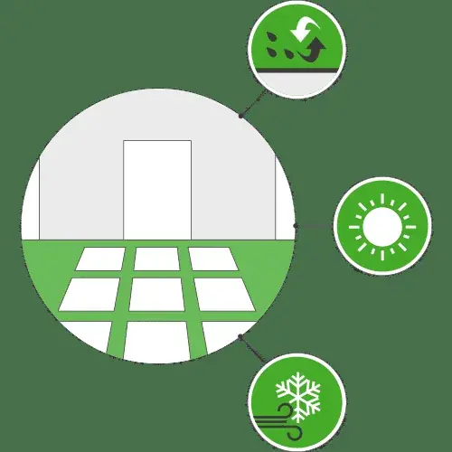
ExteriorPavimentos para exteriores Outdoor 2cms - Floorim
Concepto innovador de porcelana
El nuevo sistema de pavimentación de espesor de 2 cm para revestimientos de suelos exteriores ofrece una mezcla de diseño , versatilidad , rendimiento, facilidad de instalación y la eco – sostenibilidad.
Rendimiento técnico y visual
El producto final se obtiene mediante la fusión de cuarzo, arcilla , feldespato y en un único material que disparó a temperaturas que van desde 1200-1300 grados C. creando así una baldosa con características inigualables mecánicas que nunca se desvanecerá , mancha, corroe, sufren de musgo y puede soportar los daños por heladas .